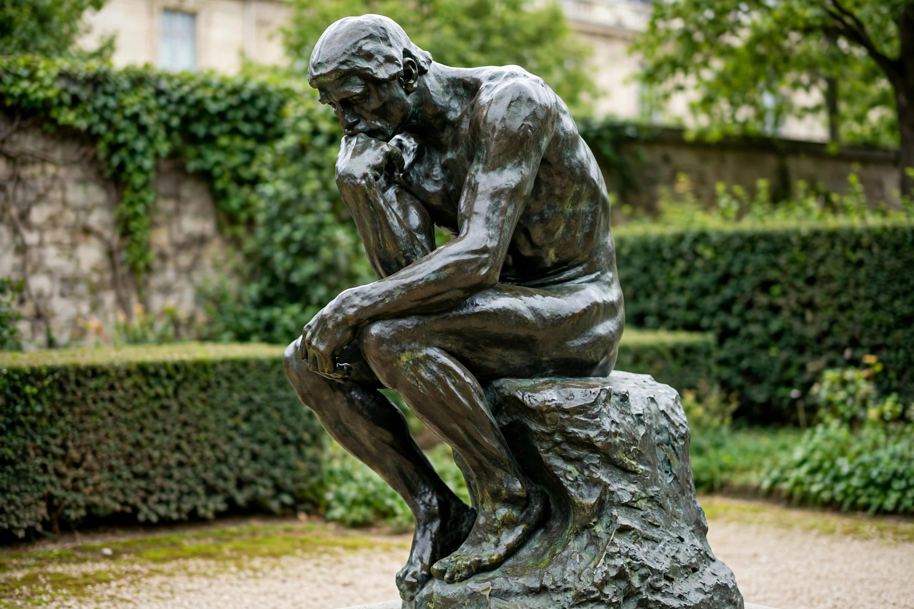

| The Thinker | |
|---|---|
| Artist | Auguste Rodin |
| Year | Conceived 1880; enlarged 1904 |
| Medium | Bronze |
| Original title | Le Penseur / The Poet |

The Thinker (French: Le Penseur), originally titled The Poet, is a bronze sculpture by Auguste Rodin, depicting a larger-than-life nude male figure seated on a rock, chin resting on one hand, deep in thought. It is among the most famous sculptures in the world and an icon of philosophy and intellect.
Rodin conceived the figure in 1880 as the centrepiece of The Gates of Hell, his monumental portal inspired by Dante's Inferno; the seated poet — possibly Dante himself, or the artist — contemplated the work below. The figure, originally about 70 cm high, was enlarged in 1904 to monumental scale.
Numerous bronze casts were made during and after Rodin's life; notable examples stand outside the Musée Rodin in Paris, at Columbia University, and at cemeteries and museums worldwide. Rodin placed a version over his own grave at Meudon.
The heroic, muscular body combined with introspective pose embodies the creative and intellectual struggle; the work is widely reproduced as a symbol of thought itself.